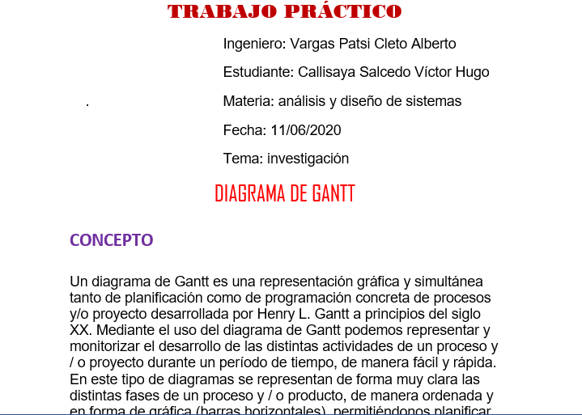
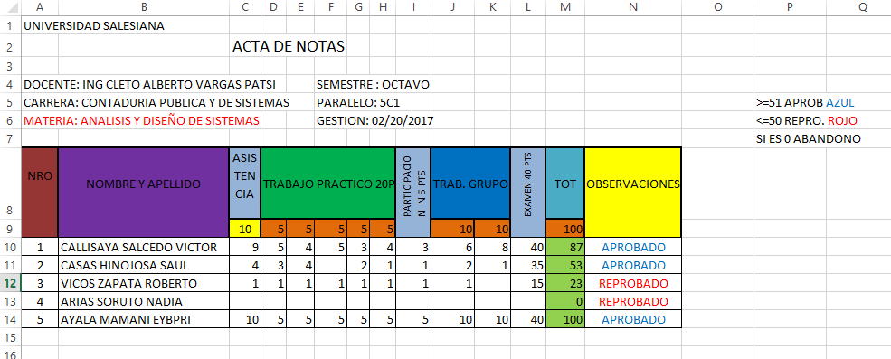
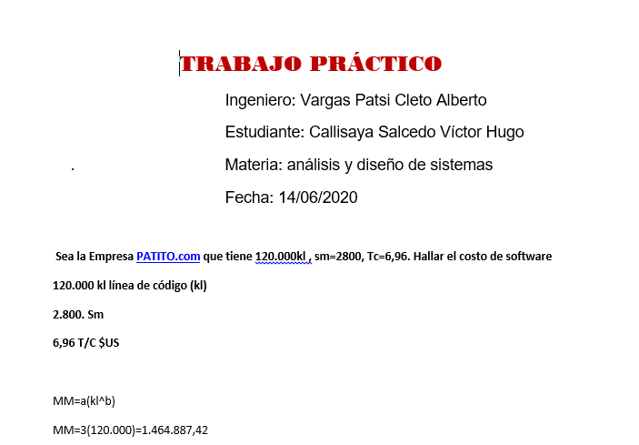

Repostería
|  |  |  |
| Descargar | Descargar | Descargar |
Ingeniero: Vargas Patsi Cleto Alberto
Estudiante: Callisaya Salcedo Víctor Hugo
Materia: análisis y diseño de sistemas
Fecha: 11/06/2020
Tema: investigación
Un diagrama de Gantt es una representación gráfica y simultánea tanto de planificación como de programación concreta de procesos y/o proyecto desarrollada por Henry L. Gantt a principios del siglo XX. Mediante el uso del diagrama de Gantt podemos representar y monitorizar el desarrollo de las distintas actividades de un proceso y / o proyecto durante un período de tiempo, de manera fácil y rápida. En este tipo de diagramas se representan de forma muy clara las distintas fases de un proceso y / o producto, de manera ordenada y en forma de gráfica (barras horizontales), permitiéndonos planificar y programar las distintas fases de un proceso y/o proyecto. Los diagramas de Gantt se utiliza concretamente para:
El diagrama de Gantt es la base para la generación e implantación de otras metodologías de gestión y control de proyectos como PERT, CPM, Cadena Crítica.
El gráfico del diagrama de Gantt es, en realidad, un sistema de coordenadas con dos ejes esenciales: en el eje vertical se ubican las tareas a realizar desde el inicio hasta el fin del proyecto, mientras en el horizontal se ponen los tiempos. En función del tipo de actividades que conformen el proyecto, los valores ubicados en el eje horizontal deben definirse en días, semanas, meses, semestres o, incluso, años. En una etapa posterior, se le asigna a cada tarea un bloque rectangular que indique su grado de progreso y el tiempo restante para su ejecución plena. Para las tareas críticas o estructurales del proceso, lo más recomendable es usar un color distinto.
Se detallan a continuación los pasos y aspectos más importantes a tener en cuenta al crear un Diagrama de Gantt:
1. Comprender la estructura del proyecto. El diagrama de Gantt ayuda a lograr el objetivo final de la planificación y la implementación correcta de cada etapa. Conocer todas y cada una de las actividades que intervienen en las fases del proyecto y cómo se relacionan entre sí resulta fundamental.
2. Reunir la información necesaria acerca de todos los pasos o procesos necesarios que forman parte del desarrollo del plan y los recursos que se requieren en cada momento. Ésta será la información que empleará el director del proyecto como punto de partida para construir el diagrama de Gantt
3. Determinar los plazos que llevará cada actividad. Asignaremos un tiempo de realización a cada tarea o fase del proyecto. La longitud de las barras horizontales en el diagrama de Gantt es la que representa la duración de cada etapa.
4. Programar las tareas a realizar para ajustar bien los plazos, escalonar los procesos y eliminar tiempos muertos. Para cada etapa, debemos fijar una fecha de ejecución. Así, el diagrama de Gantt será de gran ayuda para cumplir con el plazo límite de entrega final del proyecto.
5. Colocar todas las barras de las tareas a realizar en el gráfico. El diagrama de Gantt ensambla todas las piezas con un objetivo temporal fijado.
6. Evaluar y asignar las relaciones de dependencia entre las diferentes etapas o tareas del proyecto. Observando el diagrama de Gantt debe quedar claro en un golpe de vista el orden en qué deben desarrollarse las actividades, cuáles de ellas quedan subordinadas a otras y cuáles son independientes.
7. Implementar el diagrama de Gantt en una aplicación de software o en papel. Es una opción muy práctica realizarlo con la ayuda de un software porque algunos poseen características avanzadas que ayudan a una visualización mejor del diagrama de Gantt y a una toma de decisiones mejor orientada. Como el diagrama de Gantt es un tipo de gráfico de barras para la gestión de proyectos, también se puede diseñar en papel. De hecho, muchos directores de proyectos lo han hecho así durante largo tiempo. Sin embargo, el uso de herramientas de software especializadas presenta numerosas ventajas y, sobre todo, resulta mucho más flexible y ágil cuando es necesario realizar adaptaciones